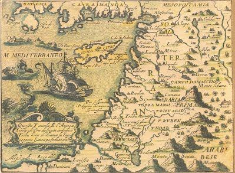

Once upon a time there lived a prince, his name was Philiphs. His goal was to reach his princess, her name was Rose. He came from an unknown village called Walland. He was very distant from his wife, but since he is very courageous he decided to go and take the risk. He needed to cross sea and land, mountains and forests to get there but love was the most important thing for him. That's why, he prepared his bag with the essentials, prepared his hourse and got ready to see the princess Rose. He jumped on the hourse and followed the map that was sent to him. After a few hours he found himself in front of a dark and creeepy forest...
Should he need to go inside the forest to reach his wife or go back to the castle?